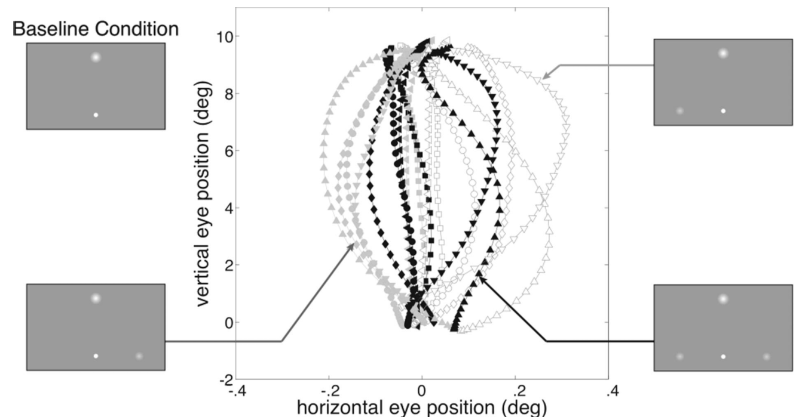

How can we use digital technologies to enhance cognitive assessment and learning?
My current research focuses on characterizing different forms of learning and determining the factors that explain why some people learn faster than others and why some people are better able than others to use prior learning experiences to adapt to new situations (transfer of learning).
To adress these questions, we develop novel video-game-like learning tasks where with minimal language participants learn step-by-step how the game works.
We use behavioral experiments to collect large data sets from adults (online) and kids (in schools) completing these learning tasks as well as cognitive assessments and surveys covering a wide range of domains (e.g., demographics, motivation, personality, life-style).
We develop computational models to account for participants learning abilities on a trial-by-trial level and use machine learning techniques to determine which of their features predict their learning abilities and could possibly be the target of future intervention studies.
My ultimate goal is to design scientifically validated interventions that have a significant positive impact on people’s lives.
I grew up in Luxembourg and studied psychology and cognitive sciences at the University of Nancy (France). I got a Master’s degree in cognitive sciences in 2005 from the Cogmaster in Paris and hold a PhD in experimental psychology from the Univeristé Paris Descartes, which I did under the supervision of Andrei Gorea. From 2009 to 2011 I worked with Joeran Lepsien as a postdoc at the Max Plank Institute for Human Cognitive and Brain Sciences in Leipzig (Germany). Since 2011 I’ve been working in Daphne Bavelier’s lab at the University of Geneva (Psychology and Educational Sciences Department; Switzerland). I’m currently a "Maître Assistant” (i.e., senior research and teaching assistant) and you can find me at the Campus Biotech in Geneva.
Highest rank; awarded best thesis of 2008 by the Doctoral School (prix d’excellence, unique prize attributed to best thesis of the year). Université Paris Descartes, France. PhD under the supervision of Andrei Gorea and in collaboration with Florian Waszak and Pascal Mamassian.
Started with a double major in computer science and in differential and developmental psychology at the Université Nancy 2, France, supervised by Claude Houssemand and Romain Martin; followed by a second year in Cognitive Science jointly organized by Université Paris 5, Université Paris 6, Ecole Normale Superieure, Ecole des Hautes Etudes en Sciences Sociales, Paris, France, under the supervision of Viviane Pouthas and Andrei Gorea.
Double major, Université Nancy 2, France
Major in biology. Lycée Classique de Diekirch, Luxembourg.
This is what I enjoy most about my work: designing experiments to efficiently address scientific questions.
I've used Matlab to create visual stimuli, run experiments, analyze behavioral data, run computer simulations, control an eye tracker, record hand pointing movements and analyze functional brian imaging data. Most used toolboxes:
Processing is awesome for rapid prototyping of viusual. Together with PhP and MySQL you create online games and collect data.
How can we exploit technology to promote learning and transfer of learning?
On the impact of new technologies on cognition.
Neural basis of attention & perceptual decision making
Sensori-motor coupling.
Comparison of Perceptual and Motor Responses in Elementary Psychophysical tasks (fr).
Eye tracking and visual psychophysics.
Visuo-spatial Working memory; Numerical cognition; Aging.
Shiny is a great framework for R that allows you to easily create and deploy interactive web application. Here are two examples of applications I've created: The first illustrates the main concepts in Signal Detection Theory and the second runs simulations to compare the effectiveness of teaching in groups vs. on a one-on-one basis.
continue reading